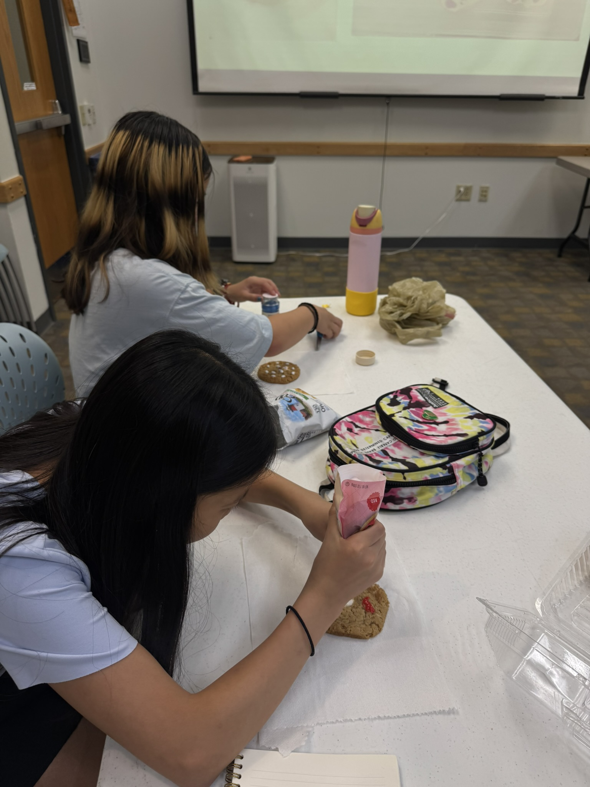

Information Session Presentation
Browse through our interactive deck tracking competitive pipelines, STEM enrichment resources, and regional tournament paths.

Interactive Deck Viewport
Use slide corner indicators or overlay toolbars to switch pages.
Quick Resources & Target Actions